Rendering using Renderman
Tanmay Randhavane
110050010
Alok Yadav
110050043
Problem Statement :
Translate the scene made for Ray Tracer assignment to PRMan and add indirect illumination, caustics, area lights, shadows and texture to the scene. Render the scene using PRMan's ray tracing and point based methods.
Rendering using Ray Tracing
In Ray Tracer assignment, we created a ray tracing based renderer in C++ and created following scene.
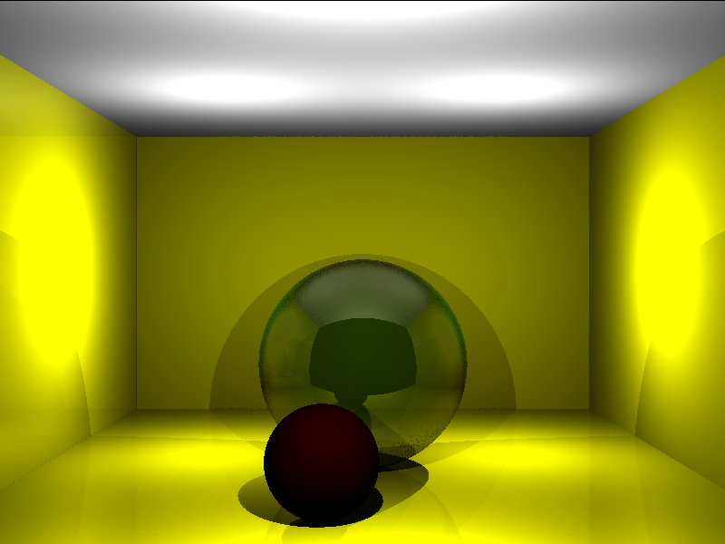
Translated Scene
In this assignment, we took the scene file for this scene and converted it to a RIB file and generated the following image in Renderman.
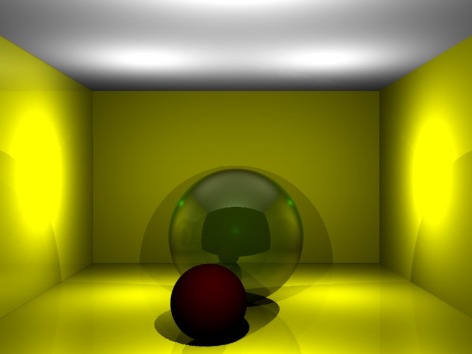
Indirect Illumination
After adding indirect illumination to the scene, we got the following result.
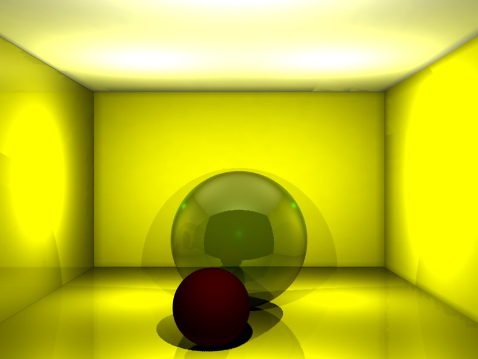
Caustics
After adding caustics to the scene, we got the following result.
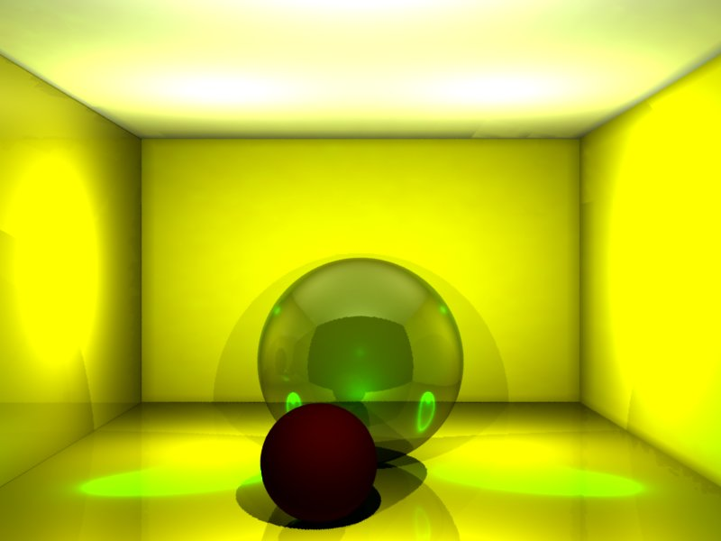
Texture
After adding texture to the back wall and to the front sphere, we got the following result.
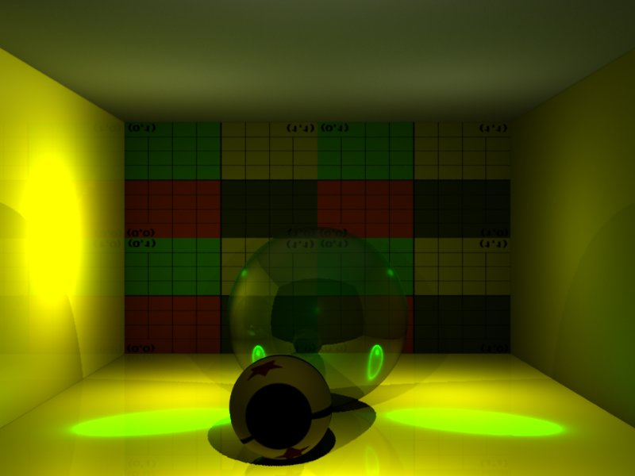
Area Light
After adding an area light to the ceiling, we got the following result.
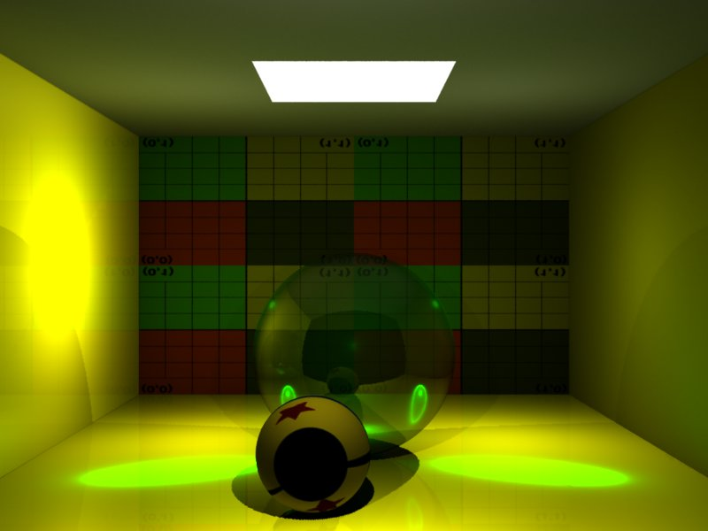
Rendering using Point Based methods
Indirect Illumination
With indirect illumination in point based method, we got the following result.
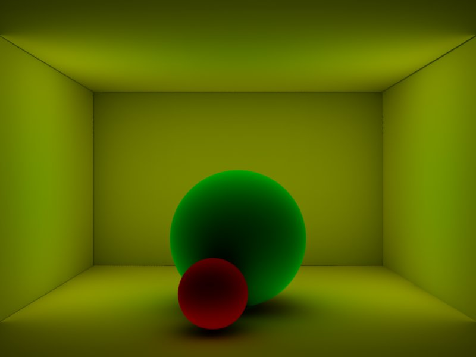
Caustics
After adding caustics to the scene, we got the following result.
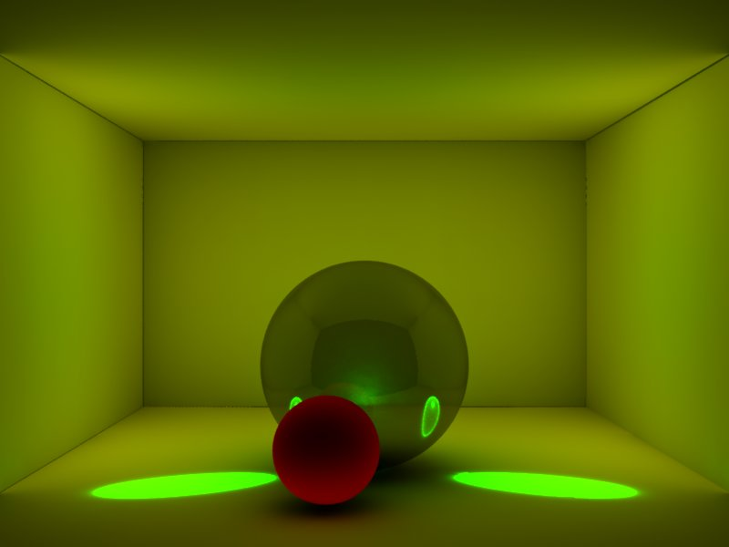
Area Light
After adding an area light to the ceiling, we got the following result.
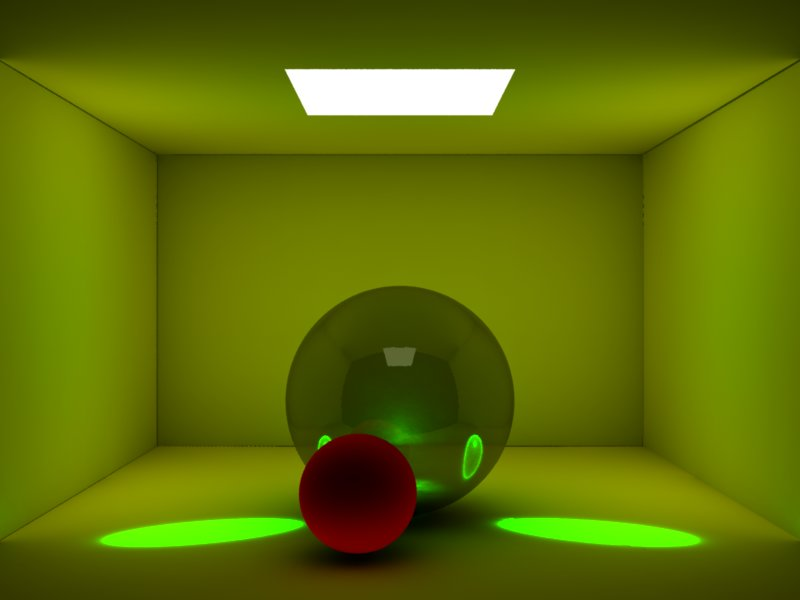
Soft Shadows
After adding occlusion to get soft shadows, we got the following result.
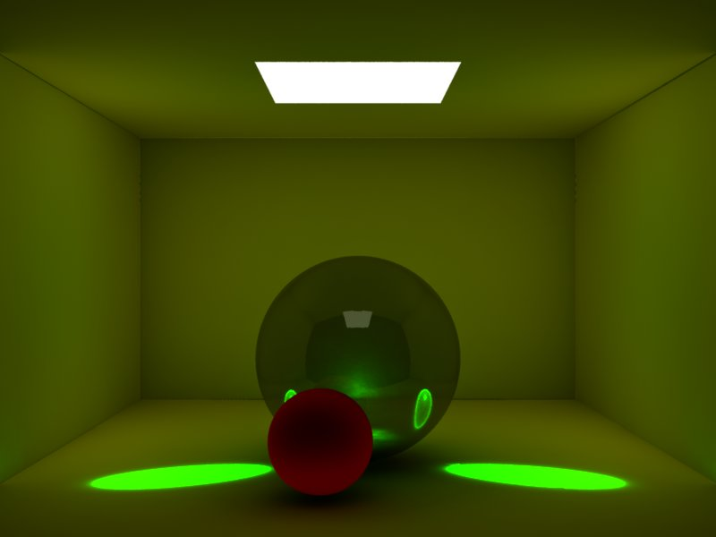
Texture
After adding texture to the back wall and to the front sphere, we got the following result.
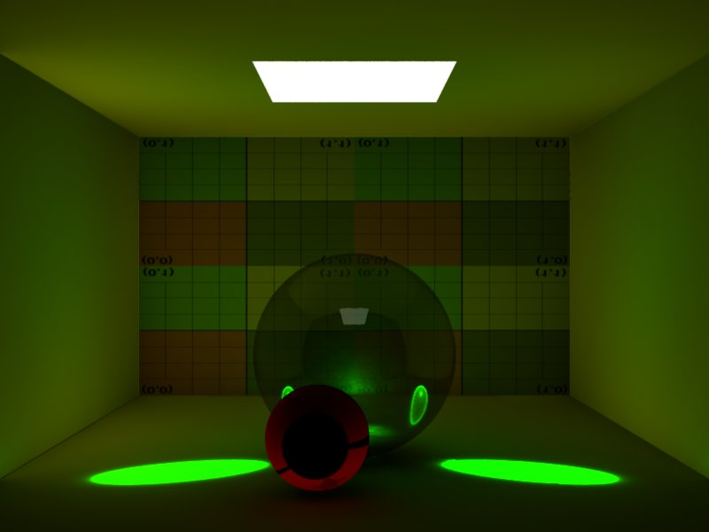